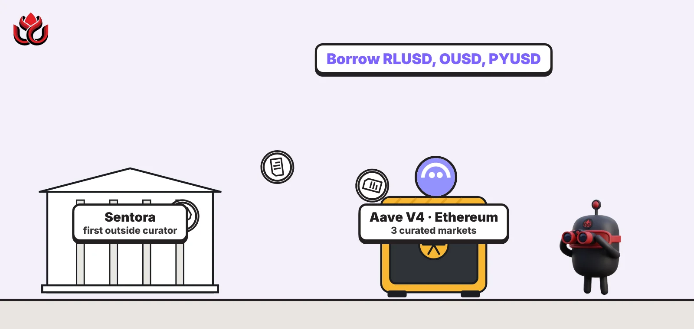
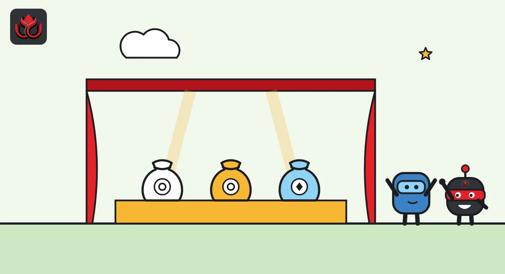
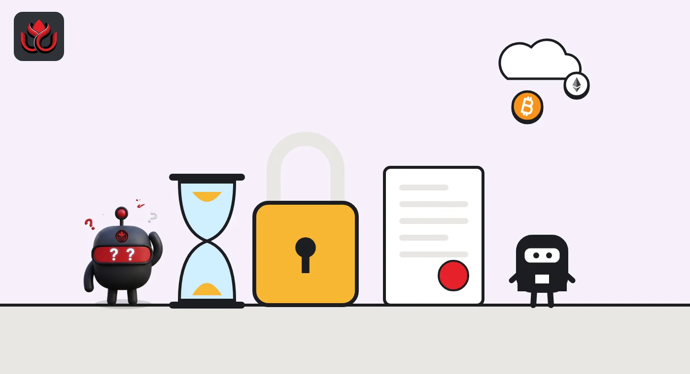

Aave lets an outsider set the risk: Sentora opens the first curated V4 markets
Sentora, not Aave's usual risk providers, now picks the collateral and rules for three Ethereum lending markets on Aave V4. Users can borrow RLUSD, OUSD and PYUSD, and the DAO keeps half the revenue under Sentora's proposal.

Key points
- On October 22, 2026, Sentora opened the first outside-run markets on Aave V4: RLUSD Yield, OUSD Yield and Bluechip, all on Ethereum.
- Sentora picks the collateral, rates, oracles and liquidation rules. Aave's DAO keeps the contracts and, under Sentora's proposal, 50% of the revenue.
- Any change that adds risk waits 48 hours onchain, and new collateral needs a two-week governance review.
What launched
On October 22, 2026, Sentora opened three lending markets on Aave V4 and took charge of their risk settings. It is the first time an outside manager, called a curator, runs markets on Aave's newest version. Sentora is a DeFi platform aimed at institutions. According to Aave Labs' launch post, the markets run on Ethereum, are open through Aave Pro and use the same V4 code as every other Aave market.
They are the first instance of a framework Sentora proposed on the Aave governance forum on September 28, 2026. That proposal let Sentora operate its own pool of deposits (a liquidity hub) and markets on V4, starting on Ethereum.
What you can borrow, and against what
- RLUSD Yield: borrow Ripple's RLUSD stablecoin against USDe, PRIME, mWIN and PST.
- OUSD Yield: borrow OUSD against the same four collateral tokens.
- Bluechip: borrow RLUSD, PayPal's PYUSD or OUSD against kBTC, a bitcoin-backed token.
The asset lists come from Aave's announcement. Sentora's proposal also names a fourth market, PYUSD Yield, with its own collateral set. It will launch later.
The "Yield" markets work like this: users post tokens that earn interest, such as Ethena's USDe, and borrow a plain stablecoin against them to use elsewhere. Bluechip is a classic loan: bitcoin exposure in, dollars out.
Only RLUSD, PYUSD and OUSD can be borrowed, each with its own interest rate curve. Every other asset is collateral only, with a 0% rate. So all debt in these markets is in one of those three dollar tokens.

Who sets the rules
This is the real change. In Aave V3, the DAO and its appointed risk firms set each market's parameters. Here, Sentora alone picks the assets, risk limits, interest rate curves, liquidation settings and oracles (the price feeds). The proposal says these settings have not been checked against the Aave Risk Framework, and the DAO's risk providers have no mandate to watch these markets.
Aave keeps guardrails. The DAO still owns the contracts and admin roles, and Sentora acts only through roles the DAO can revoke. Changes that cut risk apply at once. Changes that raise risk, or whose effect is unclear, such as interest rate models, wait through a 48-hour onchain timelock. New collateral and new hubs need a two-week forum review, and any objection from an Aave service provider sends the item to a binding Snapshot vote.
The proposal admits a gap: the DAO cannot cancel a single scheduled change during the 48-hour window. Its only fallback is to revoke Sentora's roles by vote.
Under the proposal, the Aave DAO receives 50% of the revenue from Sentora's markets. Aave's launch post does not repeat those terms.
How V4's design allows it
Aave V4 uses a hub and spoke design, Aave explains. Hubs hold the deposits. Spokes are markets that borrow from a hub, each with its own collateral and risk rules. External curation lets an independent manager run its own hub and spokes on the shared code.
Sentora's hub is walled off from other Aave markets. The proposal allows no credit lines to or from the DAO's own hubs without a separate vote. In plain terms, trouble in a Sentora market should not drain liquidity from Aave's main markets.
Sentora published a research note on the V4 design on launch day.
Others want in. On October 14, 2026, a proposal to onboard native bitcoin as collateral through Babylon's vaults was posted on the Aave forum. It still needs approval.

Sentora and the size of V4
Aave describes Sentora as a manager that has allocated more than $2 billion across onchain strategies, with more than 1,000 risk models built into each strategy. Sentora says it already runs curated lending on several separate venues, and V4 lets it combine them without giving up control.
V4 is still small next to its older sibling. In its September development update, Aave Labs said V4 deposits passed $1 billion for the first time that month, with $310 million in active loans. Active loans on Aave V3 stood at $12.5 billion.
Aave active loans and V4 deposits, September 2026
US$ billion
Timeline
Aave V4 goes live on Arc and Base; V4 deposits pass $1 billion
Sentora posts its curated hub and spoke proposal, with 50% of revenue to the DAO
Proposal to onboard native bitcoin to V4 via Babylon posted
Sentora's three curated markets go live on Ethereum
LC Insight analysis
This section is our reading of the facts above, not a statement of fact.
- We think this is the real test of V4. If outside curators can run markets safely on Aave's code, Aave becomes a platform that earns from other people's risk calls, much like Morpho.
- Watch the collateral. PRIME, mWIN and PST are far less familiar than ETH or bitcoin, and Sentora's own proposal says the DAO's risk firms do not review them. The 48-hour delay helps, but users are trusting Sentora's judgment.
- The likely result is a queue of stablecoin issuers asking for curated markets. All three borrowable tokens here are newer dollar coins hunting for demand, and an Aave market is a fast way to create it.
What's next
- Launch of the planned PYUSD Yield market and its collateral
- Revenue flowing to the Aave DAO from the Sentora instance
- A second external curator launching on V4
Disclaimer. This article is based on public information and the sources listed below as of the update time shown. It is for information only and is not investment, legal or tax advice. Figures may change as companies and authorities publish new data.
Sources
- Aave Labs, Sentora Launches Curated Markets on Aave V4 (October 22, 2026)
- Aave governance forum, [ARFC] Sentora Externally Curated Hub & Spoke Framework on Aave V4 (September 28, 2026)
- Aave governance forum, AL Development Update, September 2026 (October 1, 2026)
- Aave governance forum, [ARFC] Onboard Native BTC as Collateral to Aave V4 via Babylon (October 14, 2026)
- Sentora research, Aave V4 explained: shared liquidity, isolated risk